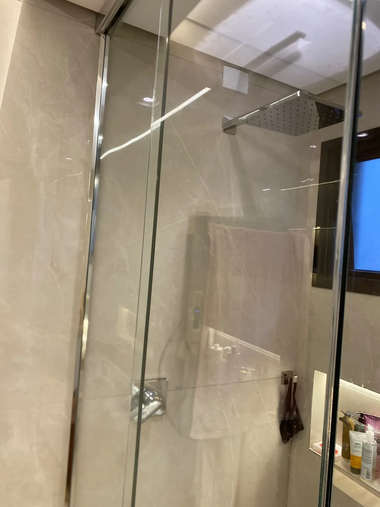
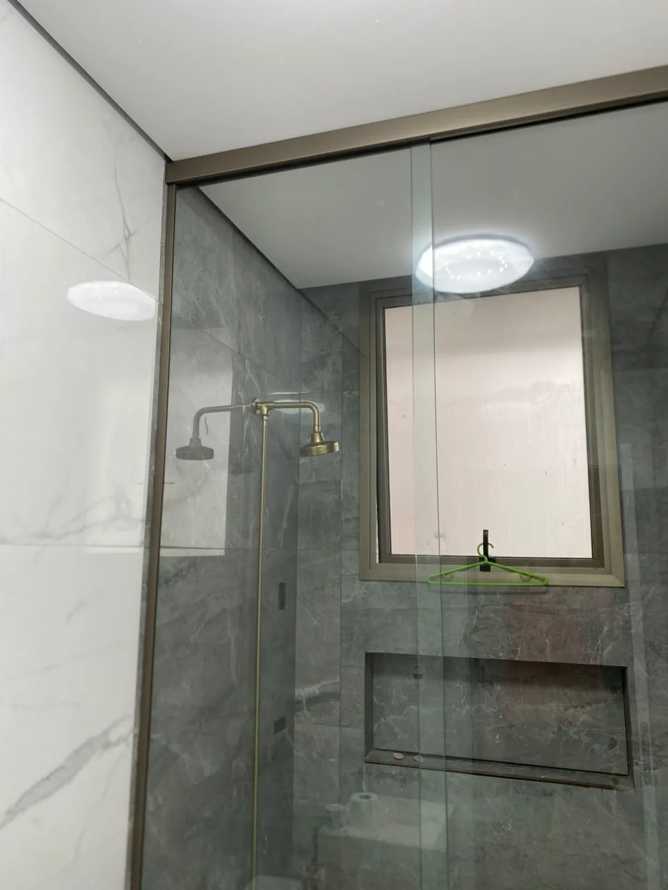
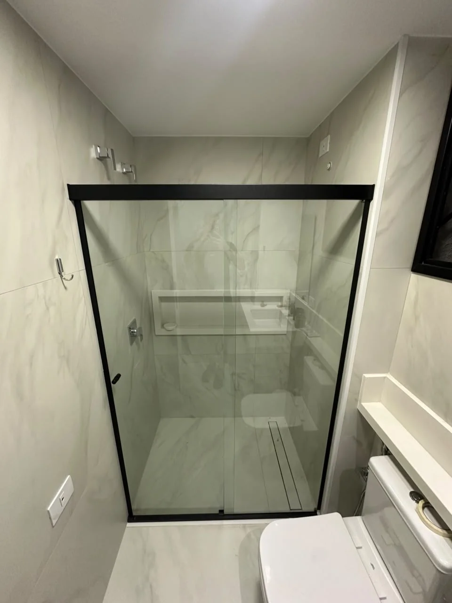
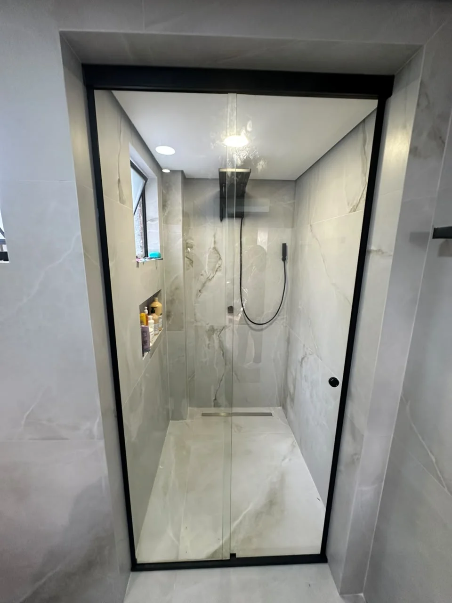
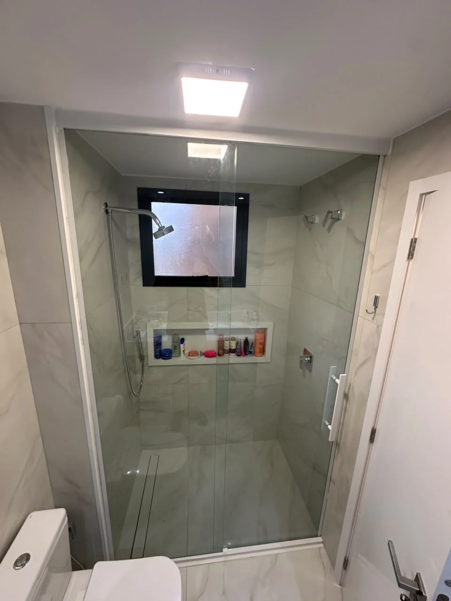
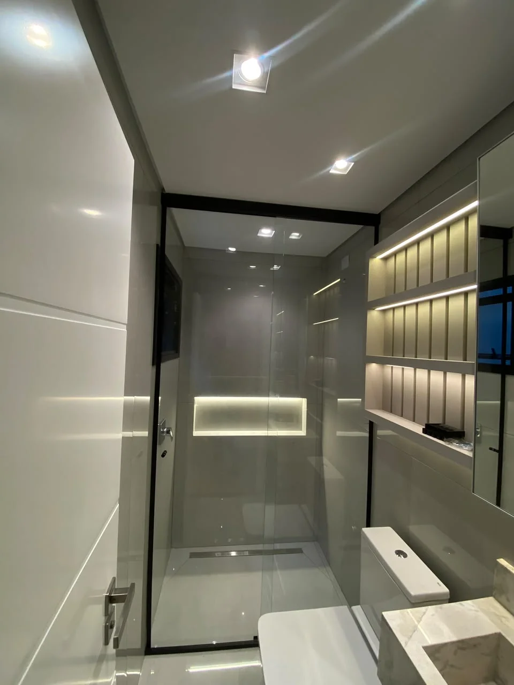
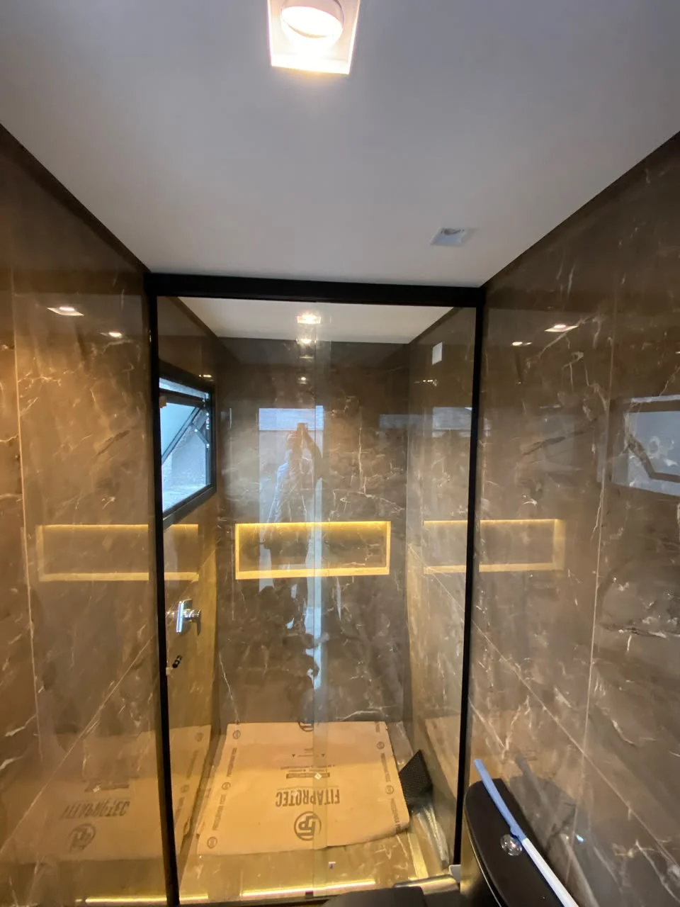
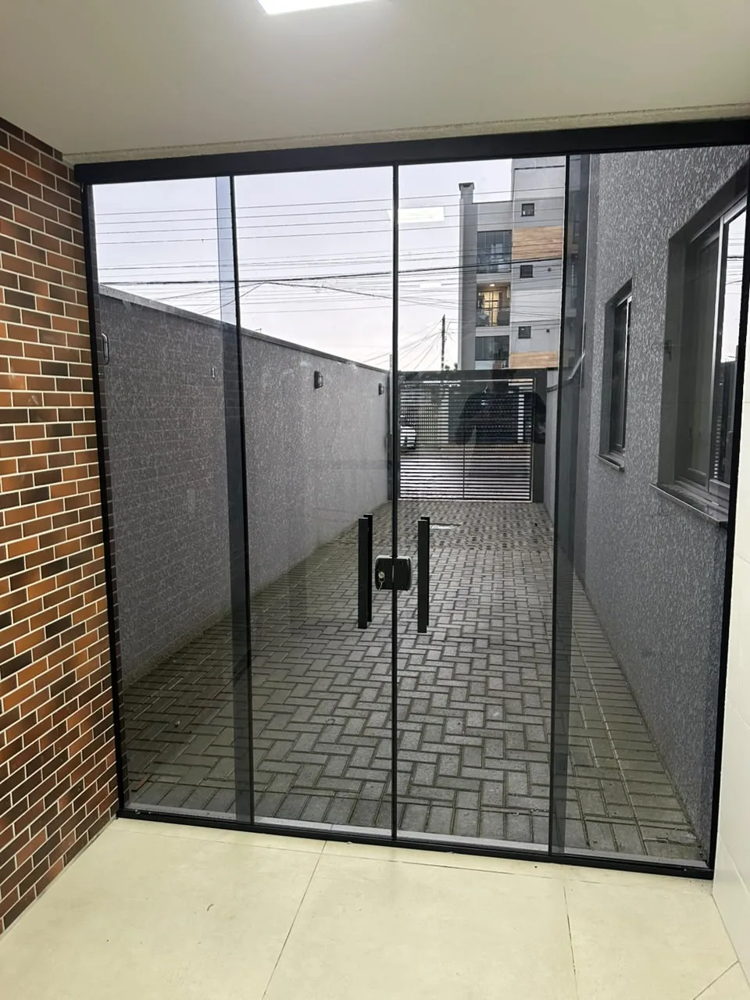

Box • Residencial
Box com Perfil Anodizado (Champanhe)
Vidro temperado 8mm • Perfil alumínio anodizado Bronze 1001 (Champanhe) • Perfis slim
Ver projetoCada foto é uma entrega real. Navegue pelas categorias e veja a qualidade suprema que aplicamos em cada instalação.
Boxes de vidro temperado sob medida com perfis em alumínio anodizado, cromado, dourado ou preto fosco. Do modelo mais clássico ao frameless de alto padrão.









Telhados e pergolados em vidro temperado ou policarbonato para varandas, áreas gourmet e jardins de inverno. Proteção com luminosidade total e estrutura de alta durabilidade.


Varandas envidraçadas com sistemas de folhas deslizantes ou removíveis. Amplie o espaço útil sem abrir mão da vista e da ventilação natural.



.webp)
Espelhos bisotados, jateados e com iluminação integrada para composições únicas. Cada espelho é cortado e instalado sob medida para o seu espaço.


Portas pivotantes, de correr e janelas de vidro com perfis em alumínio ou aço inox. Design que valoriza a arquitetura e a luminosidade do ambiente.
.webp)

Entre em contato e receba um orçamento personalizado para o seu projeto. Atendemos Curitiba e toda a Região Metropolitana.